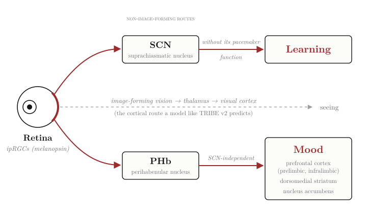

Abstract. I am a first-year student at Johns Hopkins University, majoring in Neuroscience with a minor in Applied Mathematics. I work at the bench, write software, and play piano. This page is laid out like a short paper: introduction, methods, results, discussion and citations. The spikes above are its table of contents, and each one pulls up its section.
Correspondence. If you are interested in working together, have a question about my research, or want to talk about neuroscience, music or NeuGenesis, I would be glad to hear from you: rkrish23@jh.edu.
I am a first-year student at Johns Hopkins University, majoring in Neuroscience with a minor in Applied Mathematics.
Most of my work so far has one of two shapes. Some of it is measurement: recording from neurons, or turning images of tissue into numbers that can be compared. The rest is building: software that checks where a scientific model's numbers come from, an app that teaches through music, and piano for audiences who rarely get live music. The sections that follow describe the methods, what came of them, and what I am working on now.
2Methods
Fig. 1. A pyramidal cell, drawn in ink in the manner of Ramón y Cajal.
2.1 Electrophysiology
Whole-cell patch-clamp recording and acute brain-slice preparation, which I am training in at Dr. Alfredo Kirkwood's lab at the Zanvyl Krieger Mind/Brain Institute.
2.2 Molecular biology and image analysis
RNA extraction, cDNA synthesis, qPCR and Western blot, in Dr. Ellen Ingolfsland's lab at the University of Minnesota Medical School. Semi-automated measurement of total and avascular retinal area in flat-mounted retinas from the rat model of oxygen-induced retinopathy, written as an ImageJ plugin [2, 3].
2.3 Structural modelling
Molecular docking with UCSF DOCK, protein–protein interaction modelling with AlphaFold 2, and candidate screening in VMD, used to model JNK3–MKK7 docking with Dr. Derek Cashman at Tennessee Tech; and AlphaFold with energy landscape theory, used to predict interactions between MAP kinase signal transduction proteins [4].
2.4 Software
Static analysis of scientific model code in MATLAB, R, Python, Julia and NONMEM, read without running it (NeuGenesis); and an iOS app, Sangi Tunes [5].
2.5 In-silico neuroforecasting
A pipeline that runs Meta's open brain-encoding model, TRIBE v2, on short videos to estimate a second-by-second cortical response, averages it into ten functional networks, and tests with grouped cross-validation whether those signals forecast audience retention beyond simple baselines [9]. It builds on neuroforecasting work in which measured brain responses to videos forecast their real-world engagement [10].
2.6 Literature review
Reviewed the literature on music and functional brain connectivity in autism, with Dr. Shalini Narayana at the University of Tennessee Health Science Center; the review became a first-authored paper [1].
2.7 Piano
Solo and duet performance, earlier with Melodies 4 Memphis [6].
3Results
Fig. 2. A retina, flat-mounted into four petals.
3.1 Retinal imaging
The quantification method is part of a paper in Angiogenesis [2], and the ImageJ plugin was presented as a poster at the Pediatric Academic Societies Conference [3]. Work from the same lab on iron deficiency, anemia and retinal vessels was presented there as two abstracts I co-authored [7, 8].
3.2 Protein interactions
A model of JNK3–MKK7 docking, used to look for therapeutic candidates for Alzheimer's disease; and a poster on MAP kinase interactions at the Virginia Commonwealth University Computational Medicine Symposium [4].
3.3 Music and autism
A paper on the effects of music therapy in autism spectrum disorder, in the International Journal of High School Research [1].
3.4 NeuGenesis
Co-founded in 2026 and part of the Johns Hopkins Pava Center Spark Accelerator. It ties each parameter in a model's code to the line that sets it and the source it cites; when it cannot place a value, it says so instead of guessing. We evaluated our own first approach blind, under rules written before the results, and withdrew the part that did not work.
3.5 Neuro-engagement forecasting
The pipeline is open source, with tests and notebooks for running it on a GPU [9]. So far it has been run only on synthetic data: it recovers a planted signal, and a matching null control shows no gain. The real comparison, on the SnapUGC short-video dataset, has not been run yet, so there is no result about real videos to report.
3.6 Sangi Tunes and Melodies 4 Memphis
Sangi Tunes, a music and speech learning app for neurodiverse children, is on the Apple App Store [5]. With Melodies 4 Memphis I performed solo and duet piano for seniors at assisted-living homes in Memphis and volunteered alongside student musicians [6].
4Discussion
My current project, in the Kirkwood lab, studies synaptic excitation/inhibition balance and parvalbumin-positive interneurons in cortical circuits related to circadian rhythms, to understand the critical period of plasticity: a window when experience rewires the circuit. Light is one way the outside world reaches those circuits without passing through vision at all (Fig. 3) [11]; I wrote about it in Light, Mood and Learning. I wrote about where that science stands in an essay, Windows and Brakes.

Fig. 3. Two non-image-forming routes from the retina, as described by Fernandez et al. [11]: one through the SCN to learning, one through the perihabenular nucleus to mood. The dashed line is ordinary vision. Drawn for this site.
Limitations. I am a first-year student, and most of what is above is a beginning.
Correspondence. If any of this interests you, email me at rkrish23@jh.edu.
Turn the sound on at the top of the page and each spike plays a note.
5Citations
R. Krishnan. The effects of music therapy in autism spectrum disorder. International Journal of High School Research 7, 114–119 (2025). doi:10.36838/v7i11.114
H. Qureishy, A. Morikuni, M. D. Evans, R. Krishnan, E. C. Ingolfsland. Semi-automated quantification of total and avascular retinal area in the rat model of oxygen-induced retinopathy. Angiogenesis 29(4), 52 (2026). doi:10.1007/s10456-026-10070-8
R. Krishnan. Development of a semi-automated ImageJ plugin to quantify oxygen-induced retinopathy. Poster, Pediatric Academic Societies Conference, Boston, MA (2026).
R. Krishnan, M. Zubair. Prediction of protein–protein interactions between MAP kinase signal transduction proteins using AlphaFold and energy landscape theory. Poster, Virginia Commonwealth University Computational Medicine Symposium, Richmond, VA (2025).
K. Terai, C. Roll, A. Hussein, H. Qureishy, R. Krishnan, B. Binstadt, R. Rao, E. Ingolfsland. The impact of anemia and its treatment with low or high dose enteral iron on oxygen-induced retinopathy. Abstract, Pediatric Academic Societies Conference, Boston, MA (2026).
M. Klein, K. Terai, T. Monko, R. Krishnan, T. Bastian, E. Ingolfsland. Iron deficiency promotes cell migration in human retinal microvascular endothelial cells. Abstract, Pediatric Academic Societies Conference, Boston, MA (2026).
L. C. Tong, M. Y. Acikalin, A. Genevsky, B. Shiv, B. Knutson. Brain activity forecasts video engagement in an internet attention market. Proc. Natl. Acad. Sci. USA 117, 6936–6941 (2020). doi:10.1073/pnas.1905178117
D. C. Fernandez, P. M. Fogerson, L. Lazzerini Ospri, M. B. Thomsen, R. M. Layne, D. Severin, J. Zhan, J. H. Singer, A. Kirkwood, H. Zhao, D. M. Berson, S. Hattar. Light affects mood and learning through distinct retina-brain pathways. Cell 175, 71–84 (2018). doi:10.1016/j.cell.2018.08.004
APositions
Research
Research Intern, Zanvyl Krieger Mind/Brain Institute, Johns Hopkins UniversityAug 2026 – presentMentor: Dr. Alfredo Kirkwood
Research Intern, University of Minnesota Medical School, Division of NeonatologyMay 2025 – presentMentor: Dr. Ellen Ingolfsland
Research Intern, Governor's School for Emerging Technologies, Tennessee Tech UniversityJun 2024 – Dec 2025Mentor: Dr. Derek Cashman
Research Intern, University of Tennessee Health Science Center, Department of NeurologyMar 2024 – Jul 2025Mentor: Dr. Shalini Narayana